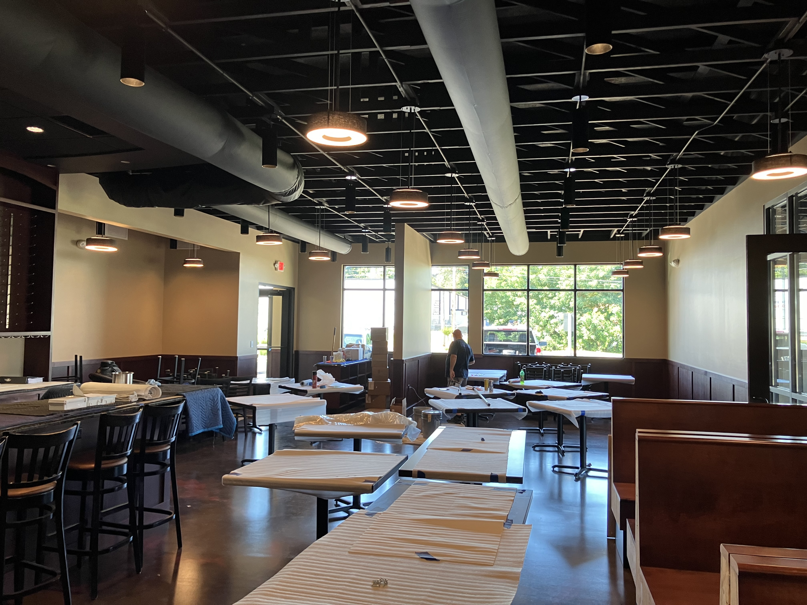
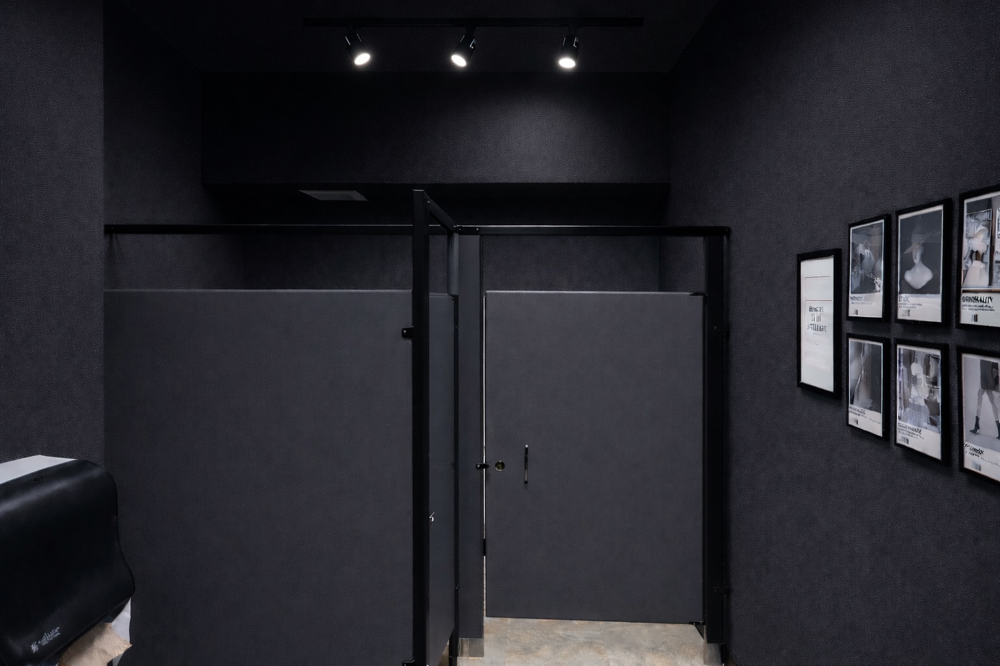

In a finished commercial interior, a properly executed flat black ceiling can appear almost effortless. Structural members, deck, conduit, piping and mechanical components recede into one dark overhead plane while lighting, walls, furnishings and customer-facing features take visual priority. That simplicity is the design advantage—and it can also hide how much planning is required to produce the result.
Open-deck ceiling painting is not the same operation as painting a flat wall or a conventional drywall ceiling. The contractor is dealing with irregular geometry, multiple substrates, restricted access, occupied-space concerns, overspray exposure and a finish that must look uniform from many viewing angles. The coating may be black, but the scope should never be treated as one undifferentiated spray item.
Why flat black ceilings are so effective
Commercial interiors often contain a visually busy collection of bar joists, corrugated deck, ductwork, conduit, sprinkler piping, hangers, supports and lighting infrastructure. When those components remain different colors or finishes, the ceiling can compete with the rest of the room. A consistent flat black finish organizes that overhead complexity into one visual field.
Black also tends to reduce the apparent height and prominence of individual components. In restaurants, hospitality spaces, retail environments, fitness facilities and entertainment venues, that helps create contrast and atmosphere without constructing a suspended ceiling below the building systems.

The overhead assembly is rarely one surface
An exposed ceiling can combine steel deck, structural steel, wood framing, galvanized components, previously painted surfaces, bare fasteners, electrical boxes, conduit, ductwork and insulation. Each material may present a different adhesion, cleaning or corrosion concern.
The first practical question is not simply, “What color should it be?” It is, “What exactly is overhead, what condition is it in, and what must remain operational or uncoated?” That review influences cleaning, spot preparation, primer requirements, masking and the finish system.

Flat black paint and black dryfall are not automatically the same specification
Dryfall coatings can be highly useful for open ceilings because properly atomized overspray is designed to dry as it falls under suitable temperature, humidity, ventilation and drop-distance conditions. That characteristic can make cleanup more manageable, but it does not eliminate the need for protection or jobsite control.
The appropriate coating still depends on the substrate, existing finish, service environment, required durability, ventilation and manufacturer instructions. In some settings, an architectural flat black coating may be appropriate. In others, a dryfall, direct-to-metal or more specialized system may be required. Product selection should follow the actual ceiling—not the assumption that every black overhead project is identical.
Uniform coverage is a visual standard, not merely a color change
Black ceilings reveal inconsistency in specific ways. Thin areas can read gray under lighting. Missed edges and shadowed surfaces may become visible as the viewer moves through the space. Different substrates or existing coatings can produce uneven absorption or sheen. Joist webs, deck flutes and overlapping members can remain partially visible unless the spray pattern and working angles are controlled.
For that reason, the goal is not just to make every component technically black. The goal is to make the ceiling read as one intentional finish from the floor.

Protection and overspray control belong in the estimate
Spraying overhead introduces exposure below and beyond the immediate work area. Floors, glass, finished walls, millwork, equipment, inventory, lighting and adjacent trades may all require protection. Air movement can carry material outside the anticipated drop zone, and active HVAC systems can complicate containment.
Dryfall behavior should be verified under the project conditions rather than assumed. Even when the coating dries before reaching the floor, the residue still has to be collected, and sensitive surfaces still need protection. In occupied or partially occupied facilities, isolation, phased work and off-hour scheduling may control the project as much as production speed.
New construction and occupied facilities require different operating plans
In new construction, the best ceiling schedule usually depends on trade sequencing. The contractor needs access before finished floors, fixtures and customer-facing materials create unnecessary protection demands, but after enough mechanical and electrical work is installed to avoid extensive touch-up.
Existing facilities present a different challenge. Furniture, kitchen equipment, merchandise, manufacturing assets or daily operations may remain in place. The coating operation then becomes a logistics project: define work zones, protect contents, maintain safe lift paths, coordinate shutdowns and return the area to service on schedule.

Questions owners and general contractors should ask before award
The lowest square-foot price may represent a complete production plan—or only the spray application. A useful comparison requires each bidder to define preparation, protection, access, coating system, number of applications, exclusions and scheduling assumptions.
The field conclusion
Flat black ceiling painting works because it makes complicated building systems feel visually simple. Achieving that effect requires the opposite approach behind the scenes: careful inspection, deliberate sequencing, accurate protection, appropriate coating selection and disciplined coverage.
For commercial owners and project teams, the practical takeaway is straightforward. Evaluate the contractor’s plan for the entire overhead operation, not just the color and stated spray rate.
Planning an open-deck or flat black ceiling project?
Review Spray GenX’s industrial ceiling capabilities and original commercial ceiling portfolio, or send project photographs and measurements for an initial scope discussion.
View ceiling painting capabilities →Commercial Painting & Coatings Report. “Flat Black and Open-Deck Ceiling Painting: What Commercial Owners Should Know.” August 3, 2026. Spray GenX LLC. https://spraygenx.com/reports/flat-black-open-deck-ceiling-painting/